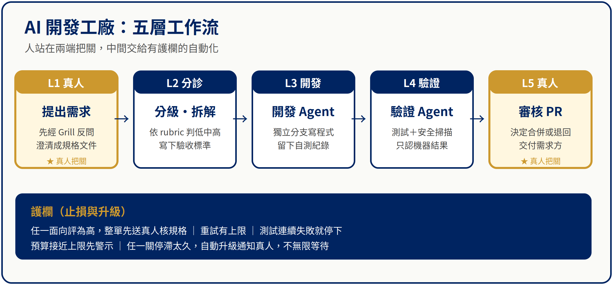

我越來越確定一件事：用 AI 寫程式之後，我返工的原因幾乎都不是程式寫錯，而是問題一開始就沒講清楚——需求含糊地進去，程式再快地出來，也只是更快地做出不對的東西。所以我一直在想，如果由我來設計一條開發流程，我會把它重新排一次：人只站在兩端，開頭把問題問到清楚，結尾驗收把關；中間的執行，交給一套有分級、有止損、異常會自動停下來叫人的自動化流程。這篇要拆的，就是這套「AI 開發工廠」五層工作流。
先說清楚適用邊界：這套分工適用於邊界清楚、成果可自動驗證、變更可逆的任務。越不可逆、越碰權限與個資、越無法自動驗證，自動化深度就越要收、真人就越要往前站。它還只是個人整理的方法論提案，不是被大規模驗證過的標準流程，可以先在小專案上試。
這篇其實有一篇前作。今年 9 月，我寫過〈OpenAB 與羅馬團隊：我們如何打造多 Agent 開發組織〉，記錄我實際組的一支多 Agent 開發軍團怎麼分工：有人訪談需求、有人規劃派工、有人寫程式、有人挑錯、有人部署與驗收。那篇是實踐紀錄；這篇是把同一套分工抽出來，整理成不綁特定工具、個人或小團隊也能試的流程框架，並補上前作沒寫的兩件事：怎麼分級、怎麼止損。兩篇的關係是：前作裡，這個分工形狀已經在我自己的團隊實際跑過；這篇試著回答它能不能複製，以及自動化到底該放多深。
五層地圖：每層對應傳統流程的哪個環節
想像一個人經營一間小軟體工廠：不是一個人變成好幾個人，而是當產出速度不再是問題，時間被迫重新分配，看清瓶頸在哪。五層這樣排：
- L1 真人提出需求：真人提交想法，經 grill 澄清後成為規格文件。它對應的是那份寫完就沒人再看的需求單——規格在這裡會被反問、修訂、定稿。
- L2 分診：分診角色讀規格，幫任務分級、拆解，並寫下驗收標準。它接手的是憑感覺排優先序、靠開會對齊，改用公開判準（後文的 rubric 表）決定每單走多自動。
- L3 開發 Agent：照任務清單在獨立分支寫程式，留下自測紀錄。它接手的是重複、可驗證的執行段——規格已定死、做法明確的寫碼工作。
- L4 驗證 Agent：跑測試與掃描，只認機器結果。它接手的是開發者自己驗收自己，改由獨立檢查把關。
- L5 真人審核：分診彙整開發與驗證結果開出 PR，真人決定合併或退回。它接手中段的層層簽核與盯場，把注意力集中到最後裁決。
整條流程的狀態大致是：提交、澄清中、已分診、開發中、驗證中、PR 已開、合併或退回。任何一關停滯太久，不無限等待，而是自動升級通知真人。真人沒有退出流程，只是從中段移到兩端的定義與裁決；高等級任務裡，中段還多一道規格核准。

為什麼 grill 是整條產線槓桿最高一層
五層裡，我認為最值得先做的不是開發自動化，而是開頭的 grill——動手之前，先反問問題。
設計上，grill 分輪進行。需求一進來，先對照五個必問面向逐項掃描：目的與成功標準、影響範圍、不可動的東西、驗收方式、期限與優先序，標出哪裡清楚、哪裡只寫一半、哪裡根本缺失。每一輪挑影響最大的未清處提問，只問少數幾題（五題左右）——分批問是怕一次倒太多問題給人，不是總共只能問幾題。每輪問幾題是節奏參數，視使用的工具與需求複雜度調整；不變的只有兩件事：答案寫回規格、定稿看覆蓋度。答案直接寫回規格文件，寫回後重新掃描；還有缺口就再問一輪，直到每個面向都達標，或提出者明確表示某處接受不確定、照案進行。規格未定稿的任務不進分診佇列，就此卡住，不放行。決定 grill 何時停的不是題數，是覆蓋度：需求寫得完整，可能一題都不用問；寫得含糊，問三輪也合理。
為什麼這一層槓桿最高？因為它同時決定下游兩件事：開發 Agent 要做什麼、驗證 Agent 要驗什麼。這套設計裡，驗收測試從 grill 定稿的規格產生，不採用開發 Agent 自寫的測試當唯一依據。需求階段多問對一個問題，省下的是開發做錯方向、驗證又驗不出來的整段返工。用工廠比喻，grill 就像開工前的圖面確認：圖面錯了，機器跑得越快，報廢品只會越多。
這不是我個人的偏好。GitHub 開源的 Spec Kit 把同樣的想法做成了產品：先用 constitution 指令為專案立下原則，再用 clarify 指令（前身叫 /quizme）在規劃前分輪提問、每輪最多五個針對性問題，把模糊處問清楚、寫回規格文件。學界也有呼應：Wu 等人（2025）發現，程式語言模型面對模糊需求時傾向直接寫 code 而非先提問；他們提出的 ClarifyCoder 框架用專門微調，讓模型學會先辨識歧義、提出澄清問題，再開始寫 code。我自己的評論是：會寫 code 和會問問題是兩種能力，流程設計不能假設前者自動包含後者。
分級 rubric：用一張表決定自動化深度
不是每一單都該用同樣的自動化程度。分級判準用四個面向逐項評估，表中的數量是起步示意，實際邊界依專案規模調整：
| 面向 | 低 | 中 | 高 |
|---|---|---|---|
| 影響範圍 | 單一模組、局部 | 跨二到三個模組 | 跨系統、對外介面 |
| 資料與權限 | 不碰個資與權限 | 讀取既有資料 | 寫入、權限、金流相關 |
| 可逆性 | 可直接還原 | 需資料回滾 | 不可逆（已發布、已寄出） |
| 驗證條件 | 有現成測試 | 需新增測試 | 無法自動驗證 |
規則只有幾條，但要寫死：任一面向評為高，整單就列高等級——分診拆解後先送真人看規格、核准了才進開發。低等級自動跑完開發與驗證，直接開 PR 等審核；中等級同樣自動跑，但 PR 要附完整的測試與掃描報告摘要。分級本身可設計成多個評估角色各自獨立給分，最後彙整成一份結構化裁決文件，只留裁決、不留討論過程當交接物。
自動跑不代表放著不管，還需要止損規則。我的建議值是：單一任務重試例如以三次為上限；測試連續失敗例如兩次就停下升級真人；單一任務設預算上限，接近上限先警示、到達就停機待裁決；掃描出現高嚴重度問題，先退回修正；修正後仍再出現就升級真人。這些數字只是起步參考值，重點是先有規則，再依專案性質調整。每次升級都要附上：卡在哪一步、試過什麼、需要真人決定什麼——叫人來是做裁決，不是丟回爛攤子。
舉個假設情境：你想幫自己的部落格加訂閱功能。只改按鈕樣式，影響局部、可還原、有現成測試，是低等級；但若要串接付款、寫入訂閱者資料，兩個面向一拉高，整單就該列高等級，先把規格給真人看過。同一張表，兩種走法，這就是 rubric 的用途。
學界對照：這套分工不是憑空想的
把五層拆開看，每層幾乎都能在公開研究裡找到對照：
| 依據 | 對回五層的哪個設計 | 一句話結論 |
|---|---|---|
| GitHub Spec Kit | L1 的 grill 與專案原則 | 把澄清做成規格流程的正式步驟，答案寫回規格文件 |
| ClarifyCoder 相關研究（Wu 等人，2025） | L1 的 grill | 需求澄清能力需要被獨立設計與訓練，不會自動附帶在寫 code 能力上 |
| MetaGPT（Hong 等人，2023） | L2 到 L4 的交接方式 | 把標準作業程序編碼進提示序列，用結構化產出交接，讓多個 agent 像流水線一樣分工 |
| ChatDev（Qian 等人，2023） | 五層分工的整體形狀 | 多個專職 agent 透過對話鏈分工，依序參與設計、寫碼與測試，是多 agent 開發分工的早期代表作 |
| SWE-agent（Yang 等人，2024） | L3 開發 Agent 的能力與限制 | 為 agent 設計專屬的電腦操作介面，能顯著提升它自主修復軟體問題的能力；介面與流程設計本身就影響成敗 |
復旦大學團隊主導的綜覽論文《Large Language Model-Based Agents for Software Engineering: A Survey》（Liu 等人，2024）系統性整理了這個領域的研究，可作深入時的起點地圖。這些對照要說明的是：結構化分工與前置澄清的價值，已在不同團隊的研究與產品實踐裡反覆出現；五層工廠只是把線索整理成個人也能試的流程。
冷靜面：哪些情況不要這樣做
先把邊界再收束一次。探索型產品的需求還在找答案，grill 問不出定稿；高度主觀的體驗設計，成果很難自動驗證；文件稀缺的老舊系統，影響範圍往往評不準；安全關鍵或受法規管制的系統，更不該讓自動化走這麼深。這些情境不是調一調 rubric 就能套用，而是要大幅收緊，甚至維持真人主導。
也要提醒不要過度承諾：這套框架還沒有被大規模驗證。分工的形狀，我已在自己的多 Agent 團隊實踐過（見前作），但分級與止損作為一套正式機制，仍在提案階段。想試的人，建議先選邊界清楚的小專案，只開低、中等級，累積樣本後回顧分級準不準、升級次數是否合理、PR 一次通過的比例，再決定要不要放寬。最後是一個我尚無答案的開放問題：中段執行越來越多交給自動化，新進者要在哪裡練讀 code 與改 code 的基本功？兩者如何並存，值得持續想。
資安面：自動化的邊界，就是風險的邊界
這不是附加的，是整套設計能否成立的前提，且全部是公開通行的最佳實務：
- 驗證與開發分離：自己出題自己答，是品質與資安的共同大忌。驗收測試必須從規格獨立產生，驗證與開發角色要用不同的提示與權限，不能讓同一個 agent 既交卷又改考卷。
- 掃描是標配，不是加分項：驗證層必跑既有測試套件、驗收測試、SAST 與 secrets 掃描；高嚴重度問題的退回與升級規則要事先寫死，不能留給 agent 自行判斷「應該沒關係」。
- 最小權限與憑證隔離：每個專案的憑證與 sandbox 獨立，agent 不跨專案共用權限，只給任務所需的最小範圍。rubric 把「資料與權限」列為獨立面向，正是為了在分級時就把權限風險算進去。
- 不可逆動作真人前置核准：已發布、已寄出、寫入或與金流相關的動作，一律提高等級，由真人在執行前核准，而非事後補審。
- 稽核軌跡：每一單的分級裁決、掃描報告、升級紀錄與最終核准都要留下結構化紀錄，出事時能回答「當初依什麼標準放行」；沒有軌跡的自動化，只是把責任弄丟。
結論：人沒有離開，只是換了位置
AI 開發工廠不是把工程師移出軟體開發，而是把人的時間從「寫每一行」移到「問對問題、定對標準、做最後裁決」——會寫程式的人、會定義問題的人、會驗收把關的人，各有位置，而且彼此需要。當產出速度不再是問題，真正稀缺的是把問題定義清楚的能力，和守住最後一關的判斷。
想試的人不必先建整座工廠。最小起步只有一個動作：下一個 issue，先只做 grill 的第一輪——把五個面向掃一遍、問最關鍵的幾題，把答案寫回規格，再讓 AI 動手。這篇如果對你有用，歡迎收藏，並追蹤後續的逐層拆解。
參考來源
- 前作（實踐篇）：OpenAB 與羅馬團隊：我們如何打造多 Agent 開發組織（金霸觀察，2026-09）：https://jinweilin.github.io/tech/openab-roman-team/
- ChatDev: Communicative Agents for Software Development（Qian 等人，2023）：https://arxiv.org/abs/2307.07924
- MetaGPT: Meta Programming for A Multi-Agent Collaborative Framework（Hong 等人，2023）：https://arxiv.org/abs/2308.00352
- SWE-agent: Agent-Computer Interfaces Enable Automated Software Engineering（Yang 等人，2024）：https://arxiv.org/abs/2405.15793
- Can Code Language Models Learn Clarification-Seeking Behaviors?（Wu 等人，2025，提出 ClarifyCoder 框架）：https://arxiv.org/abs/2504.16331
- Large Language Model-Based Agents for Software Engineering: A Survey（Liu 等人，2024）：https://arxiv.org/abs/2409.02977
- GitHub Spec Kit（官方 repo）：https://github.com/github/spec-kit
- GitHub Spec Kit 官方文件（Agentic SDD 指令參考）：https://github.github.io/spec-kit/reference/agentic-sdd.html